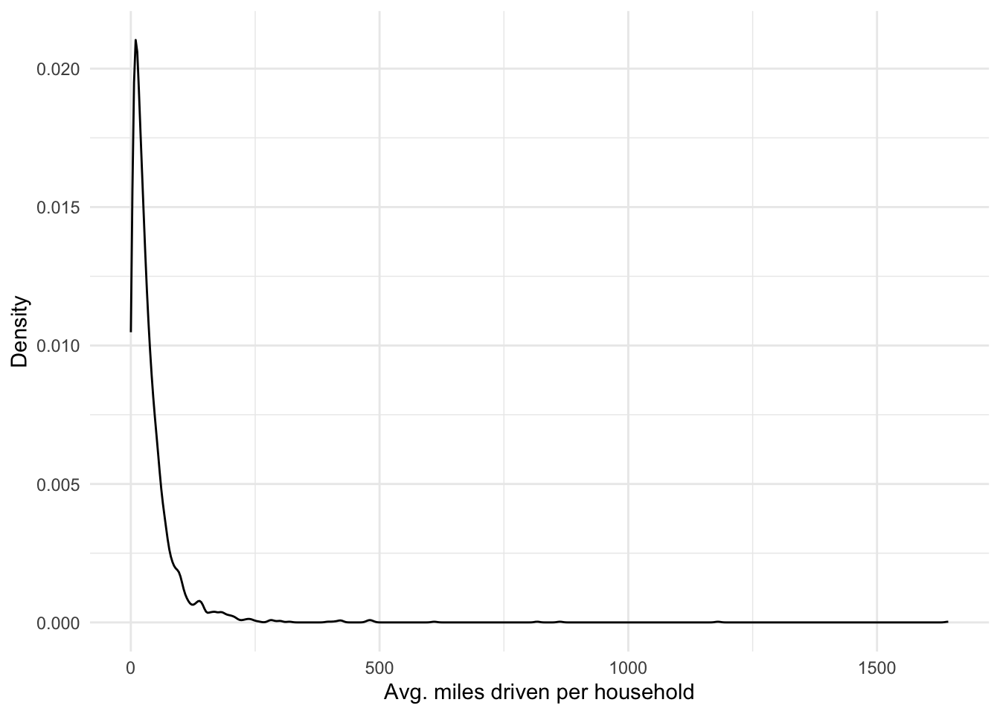
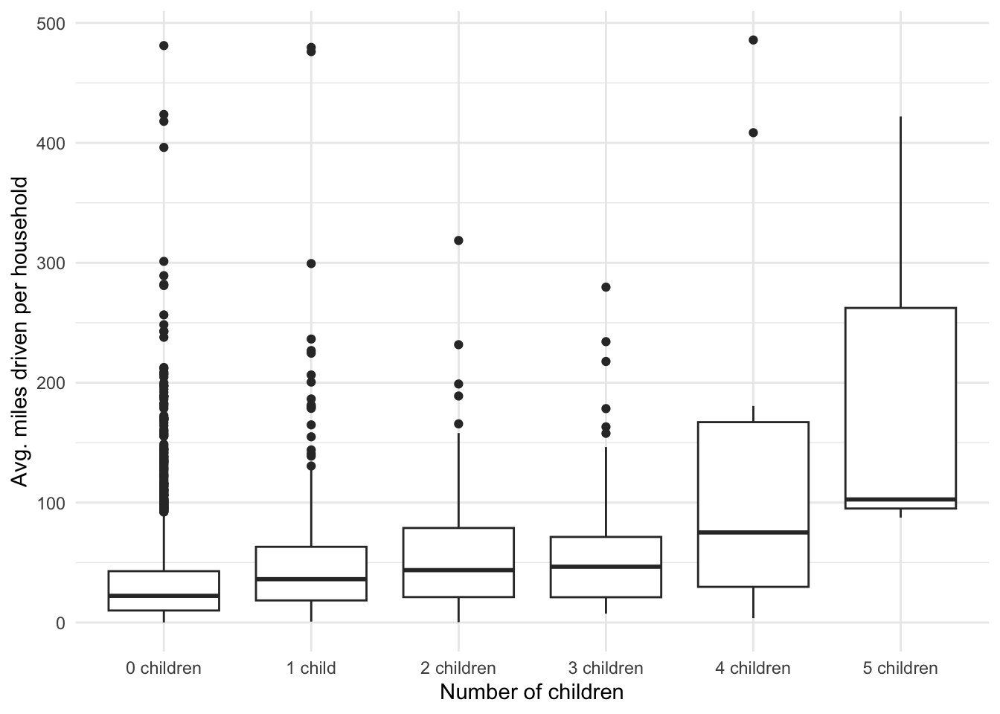
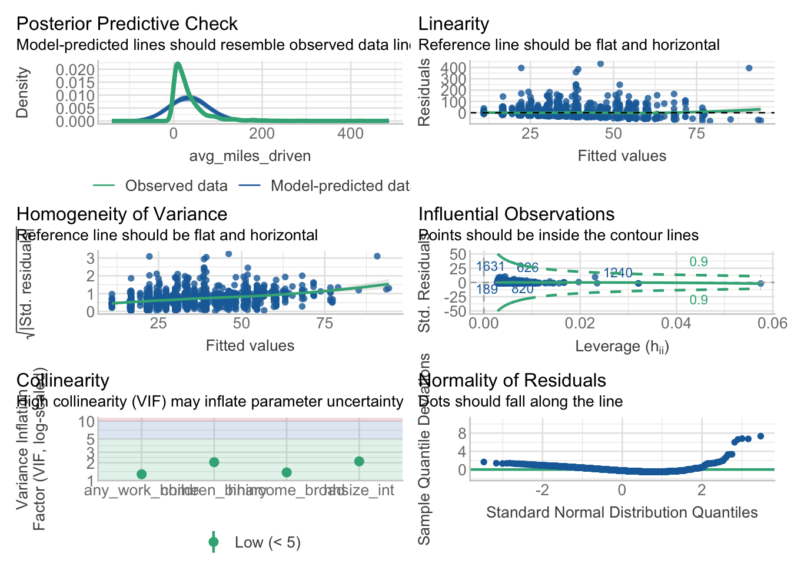
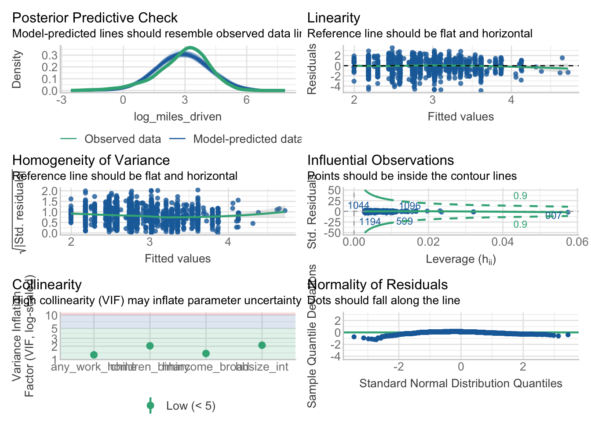

# Packages
library(tidyverse)
# Today we will also be using
# This is helpful to check the assumptions of linear models
library(performance)3 Session 3: Linear regression
3.1 Preliminaries
- You should have created an
Rstudioproject in Week 1. If you have not do so yet, I encourage you to return to a previous chapter for detailed instructions on data availability and structure. - Get familiar with the dataset. Take a few minutes to look at the introduction to it is available at: https://www.psrc.org/media/3248, and the data dictionary, which is avaiable on Moodle, too.
For today’s session we will need the following packages. Install them using the install.packages() function if you don’t have them available.
Now, we will read the data in to the R session. I am using a folder to store the data called hh-travel-survey/, change the name to the appropriate directory if you are using something different.
# Read data
trips <- read_csv('data/Trips.csv')
persons <- read_csv('data/Persons.csv')
households <- read_csv('data/Households.csv')3.2 Estimating the average miles driven per household a day
In this first example, we are interested to know about car use behaviour. So, we will use the ‘trips’ table to summarise information, and supplement it with information from the ‘households’ table by joining these together.
First, we will subset the trips which primary trip mode is ‘Drive’ only, for the year 2023.
trips_drive <- trips %>%
filter(grepl('Drive', mode_class) & survey_year == '2023')What is function grepl() doing in the previous chunk? How many observations were kept in for trips driving compared to all of the trips?
Then, we summarise all driving trips at the household level. To do so, we sum the trip distance, and divide it by the number of days with trips recorded in the survey to obtain the average miles driven.
miles_driven_hh <- trips_drive %>%
group_by(household_id) %>%
summarise(
total_miles_hh = sum(distance_miles, na.rm = TRUE),
num_days_trips = max(daynum),
avg_miles_driven = total_miles_hh / num_days_trips
)As we now have a summary per household, we can join more information about the household using the ‘household_id’ unique identifier in the left_join() function.
# Join household data
miles_driven_hh <- miles_driven_hh %>%
left_join(households, by = 'household_id')3.3 Exploratory analysis
In this analysis, we will focus on respondents having more than 0 miles driven.
# Subset
miles_driven_hh <- miles_driven_hh %>%
filter(avg_miles_driven > 0)Visualize distribution of miles driven
miles_driven_hh %>%
ggplot(aes(avg_miles_driven)) +
geom_density() +
labs(x = 'Avg. miles driven per household', y = 'Density') +
theme_minimal()
Something strange?…
Let’s limit the maximum average of vehicle miles driven. The threshold chosen should be justified, e.g. preliminary information in the context, literature, or empirical references.
miles_driven_hh <- miles_driven_hh %>%
filter(avg_miles_driven <= 500)3.3.1 Bivariate analysis
We will transform the numchildren variables to factor, treating it as a categorical. Why? Are there options?
miles_driven_hh <- miles_driven_hh %>%
mutate(numchildren = factor(numchildren))Plot the distribution of the average vehicle miles driven by groups.
# Plot distribution by groups
miles_driven_hh %>%
ggplot(aes(numchildren, avg_miles_driven)) +
geom_boxplot() +
labs(x = 'Number of children', y = 'Avg. miles driven per household') +
theme_minimal()
3.3.2 How does working from home relates to vehicle miles driven?
For this, we will need to get the information about individuals in the household. We can do this using the ‘persons’ table.
First, look at the categories in the ‘workplace’ variable
count(persons, workplace)# A tibble: 7 × 2
workplace n
<chr> <int>
1 At home (telecommute or self-employed with home office) 2118
2 Drives for a living (e.g., bus driver, salesperson) 257
3 Missing: Skip Logic 7652
4 Telework some days and travel to a work location some days 1554
5 Usually the same location (outside home) 8184
6 Workplace regularly varies (different offices or jobsites) 1519
7 <NA> 2366Then, we create a new binary variable which identifies people working from home.
# If the variable workplace contains 'At home' or 'Telework', we assign 'Yes'.
# Otherwise, we set it to 'No'.
persons <- persons %>%
mutate(
work_from_home =
ifelse(
grepl('At home|Telework', workplace),
'Yes',
'No'
))Then, we summarise the information at the household level summing the number of individuals at the household which work from home.
work_from_home <- persons %>%
group_by(household_id) %>%
summarise(pers_work_home = sum(work_from_home == 'Yes', na.rm = TRUE))Now, we can join this new information to the data at the household level.
# Join to subset
miles_driven_hh <- miles_driven_hh %>%
left_join(work_from_home, by = 'household_id')We will also create a derived variable which indicates whether anyone at the household does some work from home.
# New variable, any person working from home?
miles_driven_hh <- miles_driven_hh %>%
mutate(any_work_home = ifelse(pers_work_home > 0, 'Yes', 'No'))Is there any visual difference at the household level?
# Visualise
miles_driven_hh %>%
ggplot(aes(any_work_home, avg_miles_driven)) +
geom_boxplot() +
labs(x = 'Any working from home', y = 'Avg. miles driven per household') +
theme_minimal()
What about the descriptive statistics?
miles_driven_hh %>%
group_by(any_work_home) %>%
summarise(
miles_driven_mean = mean(avg_miles_driven),
miles_driven_sd = sd(avg_miles_driven)
)# A tibble: 2 × 3
any_work_home miles_driven_mean miles_driven_sd
<chr> <dbl> <dbl>
1 No 37.2 48.1
2 Yes 37.4 42.33.4 Evaluate the difference in a linear regression analysis
Let’ see what a simple linear model suggest
miles_driven_hh %>%
lm(avg_miles_driven ~ any_work_home, .) %>%
summary()
Call:
lm(formula = avg_miles_driven ~ any_work_home, data = .)
Residuals:
Min 1Q Median 3Q Max
-37.27 -26.84 -13.48 10.05 448.62
Coefficients:
Estimate Std. Error t value Pr(>|t|)
(Intercept) 37.1775 1.1546 32.200 <2e-16 ***
any_work_homeYes 0.1998 1.7202 0.116 0.908
---
Signif. codes: 0 '***' 0.001 '**' 0.01 '*' 0.05 '.' 0.1 ' ' 1
Residual standard error: 45.6 on 2837 degrees of freedom
Multiple R-squared: 4.755e-06, Adjusted R-squared: -0.0003477
F-statistic: 0.01349 on 1 and 2837 DF, p-value: 0.9075Are there potential problems with this model or results?
We will add socio-demographic variables as controls, e.g. size of the household should matter.
First, we format the order of household income labels and convert size of household from character to numeric. This will ease interpretations.
# Income labels
income_labs <- c(
"Under $25,000",
"$25,000-$49,999",
"$50,000-$74,999",
"$75,000-$99,999",
"$100,000-$199,000",
"$200,000 or more"
)
miles_driven_hh <- miles_driven_hh %>%
mutate(
# Income labels
hhincome_broad = factor(hhincome_broad, income_labs),
# Household size as integer
hhsize_int = as.numeric(str_extract(hhsize, "\\d+")),
# Children at household as binary
children_binary = ifelse(numchildren == '0 children', 'No', 'Yes')
)We run the multiple regression and print results.
m1 <- miles_driven_hh %>%
lm(
avg_miles_driven ~
any_work_home + hhsize_int + hhincome_broad + children_binary, .
)
summary(m1)
Call:
lm(formula = avg_miles_driven ~ any_work_home + hhsize_int +
hhincome_broad + children_binary, data = .)
Residuals:
Min 1Q Median 3Q Max
-73.04 -20.99 -9.91 8.08 433.51
Coefficients:
Estimate Std. Error t value Pr(>|t|)
(Intercept) 8.252 3.517 2.346 0.019080 *
any_work_homeYes -5.755 2.319 -2.482 0.013161 *
hhsize_int 8.500 1.218 6.978 4.26e-12 ***
hhincome_broad$25,000-$49,999 5.504 3.805 1.447 0.148158
hhincome_broad$50,000-$74,999 13.446 3.723 3.612 0.000313 ***
hhincome_broad$75,000-$99,999 10.506 3.855 2.725 0.006487 **
hhincome_broad$200,000 or more 14.104 3.914 3.603 0.000323 ***
children_binaryYes 4.003 3.556 1.126 0.260496
---
Signif. codes: 0 '***' 0.001 '**' 0.01 '*' 0.05 '.' 0.1 ' ' 1
Residual standard error: 41.54 on 1709 degrees of freedom
(1122 observations deleted due to missingness)
Multiple R-squared: 0.08689, Adjusted R-squared: 0.08315
F-statistic: 23.23 on 7 and 1709 DF, p-value: < 2.2e-163.5 Does it meet the model assumptions? … Lets check the model
Check model 1 assumptions. Type ‘y’ when you are asked about updating extensions.
check_model(m1)
3.6 A log-linear model
Lets try to fit the model in the log-linear form.
m2 <- miles_driven_hh %>%
mutate(log_miles_driven = log(avg_miles_driven)) %>%
lm(
log_miles_driven ~
any_work_home + hhsize_int + hhincome_broad + children_binary, .
)And check the model again
check_model(m2)
What are the interpretations of the log-linear model? Think of coefficients and overall performance.
summary(m2)
Call:
lm(formula = log_miles_driven ~ any_work_home + hhsize_int +
hhincome_broad + children_binary, data = .)
Residuals:
Min 1Q Median 3Q Max
-4.8798 -0.6784 0.1468 0.7830 3.5528
Coefficients:
Estimate Std. Error t value Pr(>|t|)
(Intercept) 1.92366 0.09940 19.353 < 2e-16 ***
any_work_homeYes -0.18482 0.06553 -2.820 0.00485 **
hhsize_int 0.25768 0.03442 7.486 1.13e-13 ***
hhincome_broad$25,000-$49,999 0.30127 0.10752 2.802 0.00514 **
hhincome_broad$50,000-$74,999 0.57983 0.10520 5.511 4.10e-08 ***
hhincome_broad$75,000-$99,999 0.58761 0.10894 5.394 7.85e-08 ***
hhincome_broad$200,000 or more 0.76777 0.11062 6.941 5.52e-12 ***
children_binaryYes 0.07476 0.10050 0.744 0.45705
---
Signif. codes: 0 '***' 0.001 '**' 0.01 '*' 0.05 '.' 0.1 ' ' 1
Residual standard error: 1.174 on 1709 degrees of freedom
(1122 observations deleted due to missingness)
Multiple R-squared: 0.1209, Adjusted R-squared: 0.1173
F-statistic: 33.57 on 7 and 1709 DF, p-value: < 2.2e-16Which model would you choose? Are the any other potentially omitted variables?
4 Individual activities
- Estimate average miles walked at the household level.
- How does having children relates to walking behaviour? Include descriptive statistics, plots, and multiple linear regression analysis.
- To what extent are the assumptions of the linear model met?